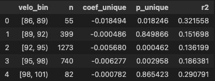

How Unique is a Pitcher? Measuring Pitch Profile Difference with Statcast
March 2026
The emergence of Statcast has fundamentally changed how pitchers are evaluated. Modern models, like Stuff+, can now assess pitch quality directly from physical characteristics (velocity, movement, spin, release, extension, etc.) without relying on noisy outcomes like ERA. While metrics like Stuff+ are excellent at answering how good a pitch is, they leave open a related question:
How different is a pitcher from everyone else who throws similar pitches?
That distinction matters. Deception, unfamiliarity, hitter preparation, scouting, and player evaluation all depend on relative uniqueness, not just raw pitch quality. This work introduces Unique+, a descriptive metric designed to quantify how unusual a pitcher’s overall pitch profile is compared to his peers and explores how it can be used alongside Stuff+ to add context to pitcher evaluation.
How Unique+ is Calculated
At a high level, Unique+ measures the distance in pitch-shape space. For each pitcher, I constructed a feature vector using pitch-level characteristics across their arsenal including:
- Velocity
- Horizontal and vertical movement
- Spin rate and spin axis
- Extension
- Release and plate location
- Pitch mix indicators
All features are standardized within handedness to ensure fair comparisons between right- and left-handed pitchers.
Using k-nearest-neighbors (kNN), each pitcher is compared to their closest peers in this multi-dimensional feature space. A pitcher’s average distance to their nearest neighbors serves as their raw uniqueness score.
To make this metric interpretable, scores were normalized by the league average for each year by handedness. The result is scaled so that 100 is equal to the league average and higher values indicate more unusual pitch profiles (110 means that a pitcher's profile is approximately 10% farther from his nearest peers than the leauge average). Importantly, Unique+ is not optimized on outcomes. It is intentionally descriptive and designed to answer what a pitcher looks like, not how good or effective is he.
The Most Unique Pitchers of 2025
Below are the five most unique right- and left-handed pitchers by Unique+ in 2025.

These pitchers are not necessarily the best in baseball, nor should they be interpreted as such. Instead, they are pitchers for whom it is difficult to find close stylistic comps for. In many cases, their uniqueness comes from unusual combinations in pitch shapes, release traits, or pitch mixes rather than extreme values in a single dimension.
Pitch-Level Examples
While Unique+ is defined at the pitcher level, the same framework can be applied at the pitch level to identify individual pitches that are unusual relative to others of the same type.
Some pitches that stood out include:

It is worth noting that uniqueness alone does not indicate effectiveness. Some pitches with high unique scores are unique for the wrong reasons and perform poorly as a result. Others, however, represent true “unicorn” offerings, pitches that are both unusual and highly effective. Unique+ is designed to flag difference, not to judge quality.
Unique+ paired with Stuff+
Because Unique+ is descriptive by construction, the relevant question is not whether it outperforms Stuff+, but whether it adds meaningful context once pitch quality is accounted for. To explore this, I examined pitcher performance within average fastball velocity ranges and estimated regressions of the form:
FIP ∼ (Stuff+) + (Unique+)
By placing pitchers into velocity bins, this approach isolates comparisons between pitchers with similar raw velocity while controlling for pitch quality via Stuff+. The goal is not to attribute performance to uniqueness alone, but to evaluate whether stylistic differences capture information not fully explained by pitch quality metrics. The regression results can be seen in the table below:

Low-Velocity Pitchers (86–89 mph)
Among pitchers averaging 86–89 mph, Unique+ exhibits the largest negative coefficient, suggesting a strong relationship between unusual pitch profiles and run prevention. However, this velocity range represents a small and highly selected population. At these velocities, remaining in a major league role often requires extreme stylistic traits, such as unconventional arm slots, atypical movement profiles, or deceptive release characteristics.
In this context, uniqueness functions less as a marginal advantage and more as a prerequisite for viability. As a result, while the estimated effect of Unique+ is large in this range, it likely reflects survivorship and selection effects rather than a broadly generalizable relationship.
Lower-Mid Velocity Pitchers (89–92 mph)
In the 89–92 mph range, the relationship between Unique+ and FIP weakens substantially. Coefficients are small and statistically insignificant, indicating that within this group, variation in uniqueness provides little additional explanatory power once Stuff+ is accounted for.
This is a transitional range in which pitchers may succeed either through above-average pitch quality or through atypical stylistic traits, but uniqueness alone does not appear to systematically differentiate outcomes.
Core Velocity Range (92–98 mph)
The most consistent signal for Unique+ appears in the 92–98 mph range. Across multiple bins within this interval, Unique+ shows a small but statistically significant negative relationship with FIP after controlling for Stuff+. In practical terms, among pitchers with comparable velocity and Stuff+, those with more unusual pitch profiles tend to allow slightly fewer runs.
The magnitude of this effect is modest, and Stuff+ remains the dominant driver of performance. However, this is precisely the environment in which a descriptive metric like Unique+ is most informative. Unlike at very low velocities, uniqueness is not a prerequisite for inclusion, and unlike at very high velocities, pitchers are not uniformly overpowering. In this middle range, stylistic differentiation appears to function as a secondary advantage.
High-Velocity Pitchers (98+ mph)
At the upper end of the velocity spectrum, the relationship between Unique+ and performance becomes less stable. Sample sizes are considerably smaller, and coefficients lose statistical significance. This is unsurprising as at extreme velocities, raw stuff dominates outcomes, and many pitchers succeed with relatively conventional pitch profiles.
What Unique+ is and Isn’t
Unique+ should not be interpreted as a standalone evaluation metric. It does not attempt to predict performance, nor does it claim that being different is inherently good.
Instead, it is best viewed as:
- A contextual input alongside Stuff+
- A tool for identifying pitchers whose results may not align cleanly with pitch quality alone
- A framework for finding unusual player comps and stylistic outliers
For player evaluation and development, Unique+ can help answer questions like:
- Which pitchers require different scouting or preparation strategies?
- Which arms succeed (or fail) in ways not fully explained by pitch quality models?
- Where does a pitcher sit stylistically within the league, not just on a quality scale?
Conclusion
Unique+ was built to answer a simple question: how different is this pitcher from his peers?
By design, it does not compete with Stuff+. Instead, it complements it by adding a layer of stylistic context that pitch quality metrics alone cannot capture. The results suggest that while pitch quality drives outcomes, pitch profile uniqueness provides additional, situational information, particularly among pitchers with similar physical tools.